발사체 DVS·CIS 촬영
누리호 5차 발사를 DVS 이벤트 카메라와 CIS 카메라로 촬영하기 위해 대표님, 선임연구원 한 분, 그리고 저까지 총 세 명이 여수 낭도로 갔습니다. 촬영 장소와 숙소는 출발 전에 직접 선정했고, 발사 전날에는 현장에서 데모를 진행했습니다. 펑션 제너레이터와 동축 케이블로 외부 트리거를 시험하고, 미리 계산한 시야에 맞춰 두 망원경을 운용했습니다. 빔스플리터로 같은 장면을 두 센서에 담은 촬영 결과와 직접 제작한 4K·60 FPS 영상을 함께 정리합니다.
1. 낭도에서 담아 온 누리호
바다 건너 작게 보이던 누리호를 망원경으로 당겨 촬영했다. 빔스플리터로 들어오는 빛을 나누어 CIS 센서와 NRV DVS 센서가 같은 장면을 찍게 구성했다. 한 관측 장면에서 일반 영상과 이벤트 영상을 함께 얻어, 발사체의 움직임과 화염이 두 센서에 어떻게 보이는지 비교했다. 첫 번째 영상은 발사대를 떠나 상승하는 장면이고, 두 번째 영상은 발사대를 관찰한 장면이다. 현장에서 얻은 데이터를 내가 직접 처리해 두 카메라의 결과를 나란히 볼 수 있도록 만들었다.
상승 장면에서 특히 눈에 들어오는 것은 엔진의 불꽃이다. 이번 촬영에서 CIS 영상은 강한 화염이 하얗게 포화되어 불꽃 내부의 모습을 알아보기 어려웠다. DVS 영상에서는 각 노즐에서 나오는 불꽃이 구분되고, 연소하면서 변하는 화염의 윤곽도 관찰할 수 있었다. 밝은 불꽃 속의 빠른 변화를 볼 수 있다는 이벤트 카메라의 장점이 실제 발사 장면에 드러났다.
2. 출발 전에 챙긴 것들
낭도로 가져갈 장비에는 앞선 작업들이 고스란히 들어 있었다. 장시간 녹화 개선에서 손본 저장 프로그램과 저장장치, 망원경 연동과 원격 촬영을 준비하며 구매하고 조립한 두 망원경, 직접 설계하고 출력한 카메라 어댑터를 이번 촬영에 사용했다. PC 화면을 보며 키보드로 망원경 방향을 움직이는 기능도 미리 준비해 두었다.
사무실에서 조립할 때는 각 부품과 프로그램에 집중했다면, 출장을 준비할 때는 장비 전체를 한꺼번에 생각해야 했다. 망원경과 삼각대에 카메라, 노트북, 펑션 제너레이터와 케이블까지 더해지니 챙길 것이 많았다. 현장에서 어느 방향으로 망원경을 세우고 어디에 노트북을 둘지, 장비를 펼칠 공간은 충분할지도 고려했다.
촬영 장소와 숙소도 출발 전에 직접 찾아 선정했다. 낭도에서 발사대를 바라볼 수 있는 방향과 각도, 장비를 가져가 설치할 수 있는 위치를 고려해 낭도둘레길1코스 주차장 인근을 촬영 장소로 정했다. 발사 전날부터 현장에서 데모를 할 계획이었기 때문에 이동과 숙박, 식사까지 함께 준비했다.
장비를 고를 때 계산했던 촬영 범위도 다시 연결해 보았다. 촬영 거리와 누리호의 크기, 망원경의 초점거리와 카메라 센서 크기를 바탕으로 화면에 들어올 범위를 예상했다. 작은 NexStar 4SE는 누리호 전체를 담고, 큰 C11은 더 좁은 영역을 확대해 관찰하는 역할로 준비했다. 현장에서 장비를 놓는 순서도 이 촬영 목적을 기준으로 생각했다.
3. 미리 정한 촬영 장소에서 전날 데모를 진행하다
누리호 5차 발사 전날, 사전에 선정해 둔 낭도 촬영 장소에 도착했다. 눈앞에는 바다가 넓게 펼쳐져 있었고, 건너편 섬의 평평한 부분에 누리호와 발사대가 작게 보였다. 미리 확인한 방향을 실제 풍경과 맞춰 본 뒤, 준비한 망원경과 카메라를 연결해 현장 데모를 진행했다. 전날의 목적은 촬영에 사용할 구성을 실제 장소에서 한 번 운용해 보는 것이었다.
촬영 장소: 낭도둘레길1코스 주차장 인근 · 전라남도 여수시 화정면 낭도리 213
지도상 GPS 좌표: 북위 34.59891°, 동경 127.55267°
Google 지도에 표시된 주차장 위치를 기준으로 안내한 좌표이다.
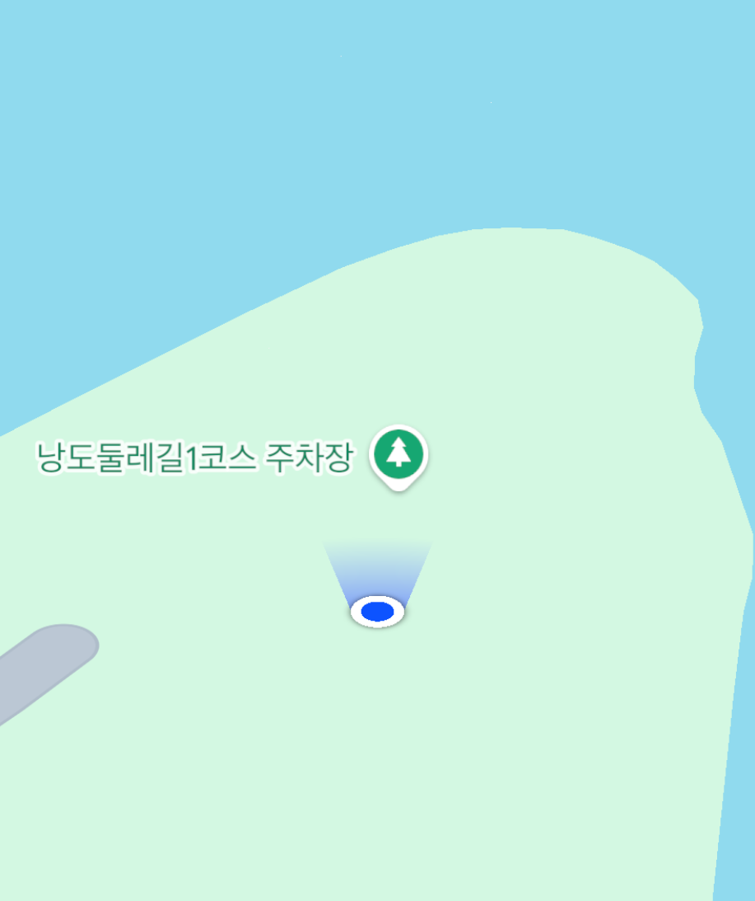
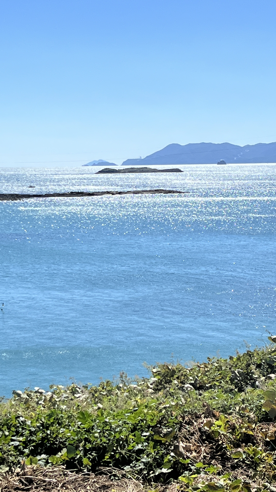
위 사진을 보면 왜 망원경을 가져왔는지 실감할 수 있다. 1배 화면에서는 바다와 섬이 대부분을 차지하고, 누리호는 멀리 있는 작은 구조물처럼 보인다. 섬의 평평한 부분을 따라 시선을 옮기면 막대 두 개처럼 솟은 곳을 찾을 수 있는데, 그곳이 우리가 계속 바라볼 방향이었다. 데모에서는 이 지점을 망원경 화면 안에 넣고 카메라로 들어오는 장면을 확인했다.
사전에 정한 장소라도 실제로 장비를 펼쳐 보아야 확인되는 부분이 있었다. 망원경을 세우고 카메라를 연결한 뒤 PC 화면으로 대상을 보면서, 방향 조작과 영상 수신이 현장에서도 이어지는지 확인했다. 전날 데모에서 드러난 문제를 점검할 수 있었고, 숙소에서도 필요한 테스트를 이어갔다.
4. 대표님, 선임연구원과 함께한 출장
이번 출장에는 대표님, 선임연구원 한 분, 나까지 세 명이 함께했다. 현장에서는 함께 장비를 옮기고 망원경을 설치하면서 관측 방향과 PC 화면을 확인했다. 미리 준비한 장비를 실제 관측 방향에 맞춰 세우고 연결하는 과정이었다. 두 망원경과 카메라, PC, 테스트 장비가 모두 놓이면서 해안의 촬영 구성이 갖춰졌다.
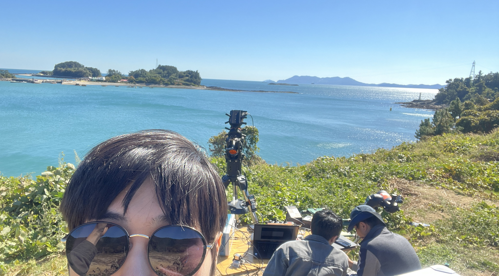
현장에서는 직접 텐트를 치고 두 망원경과 노트북, 펑션 제너레이터를 설치했다. 망원경 뒤에 카메라를 붙이고 케이블을 PC까지 연결하니 장비가 차지하는 범위가 생각보다 넓었다. 사진에는 망원경이 먼저 눈에 들어오지만, 그 뒤에서 화면을 보고 장비를 다룰 자리까지 함께 마련해야 했다.
현장에서는 미처 생각하지 못한 점도 많았다. 사무실 책상 위에서 시험하던 장비를 바깥에 펼쳐 놓으니 설치할 자리부터 사람과 장비가 오가는 공간까지 직접 맞춰야 했다. 출발 전에 준비한 장소와 숙박 계획에 맞춰 움직이면서도, 장비 연결과 현장 운용에서 생기는 문제는 직접 해결해야 했다.
5. 펑션 제너레이터와 외부 트리거 테스트
전날 현장 데모에서 확인한 문제는 사전에 예약한 펜션에서도 이어서 점검했다. 노트북과 펑션 제너레이터를 꺼내 연결하고, 외부 트리거인 EXTTRG 설정과 신호 연결 방법을 찾아보며 시험했다. 펑션 제너레이터에서 만든 신호는 동축 케이블(coaxial cable)로 연결했다. 카메라에 영상이 들어오는 것에 더해, 외부에서 넣은 신호에 맞춰 촬영 구성이 동작하는지도 확인해야 했다.
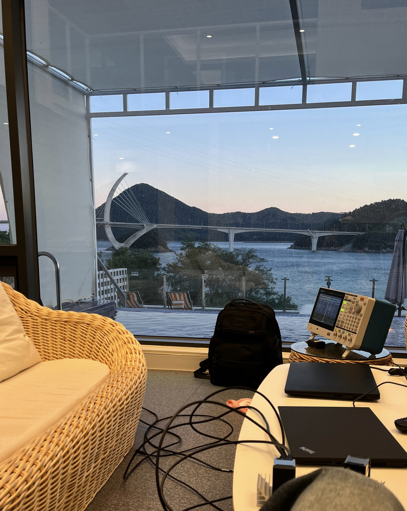
외부 트리거는 카메라가 외부에서 받은 전기 신호를 기준으로 동작하게 하는 기능이다. 이때 펑션 제너레이터는 시험 신호를 만들고, 동축 케이블은 그 신호를 입력부까지 전달한다. 영상 데이터를 PC로 받는 연결과 트리거 신호를 넣는 연결의 역할을 구분하며 장비를 구성했다.
설정을 찾아보면서 Trigger source는 사용할 입력을, Trigger edge는 신호의 어느 변화를 기준으로 삼을지를, Trigger mode는 트리거에 대한 동작 방식을 정하는 항목이라는 점을 확인했다. 펑션 제너레이터의 출력 신호와 카메라 입력 설정을 함께 살펴야 했다. 케이블을 연결한 뒤 설정을 적용하고 실제 입력에 반응하는지 확인하면서 문제를 좁혀 갔다.
다음 날 발사 촬영에 사용할 장비였기 때문에, 전날 데모와 숙소 테스트에서 연결과 설정을 미리 점검한 것이 중요했다. 이번에는 광학계와 저장 프로그램뿐 아니라 외부 신호를 넣는 방법까지 찾아 익히며 촬영을 준비했다.
6. 바다를 향해 두 망원경을 세우다
현장에서는 삼각대와 마운트를 세우고 그 위에 경통을 올렸다. 큰 C11과 작은 NexStar 4SE를 나란히 놓으니 크기 차이가 한눈에 들어왔다. 구매하고 조립하며 익혀 둔 장비들이 이제 실제 누리호를 바라보게 된 것이다. 두 망원경을 관측 방향에 맞춰 세우고 카메라와 케이블을 연결했다.
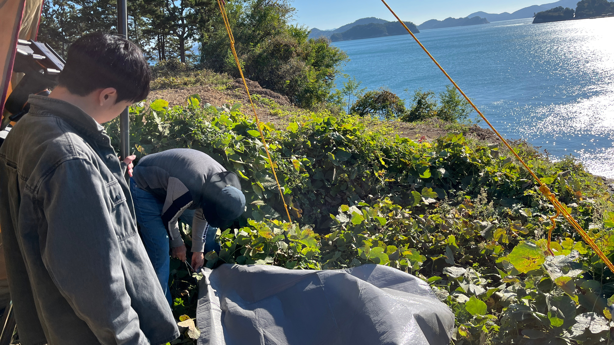
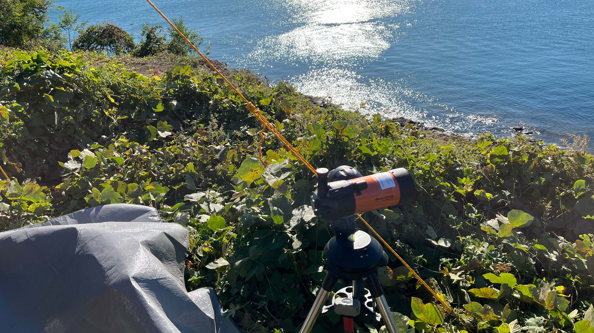
망원경 뒤에는 직접 제작한 어댑터를 끼우고 카메라를 바로 연결했다. 사무실에서 치수를 맞춰 설계하고 3D 프린터로 출력했던 부품이 이곳에서도 두 장비를 이어 주었다. 카메라까지 붙이고 나면 망원경으로 들어온 장면을 노트북에서 확인할 수 있다. 바다 건너 작게 보이던 발사대를 화면 안에서 찾고 초점을 맞추며 관측 방향을 조정했다.
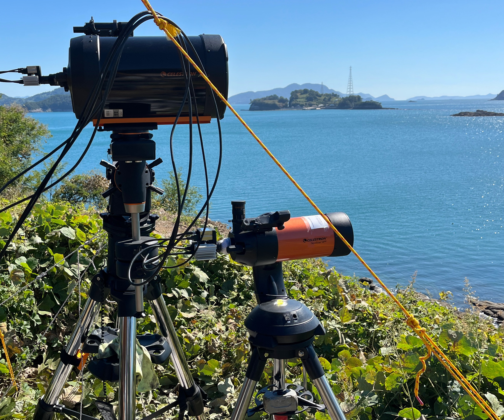
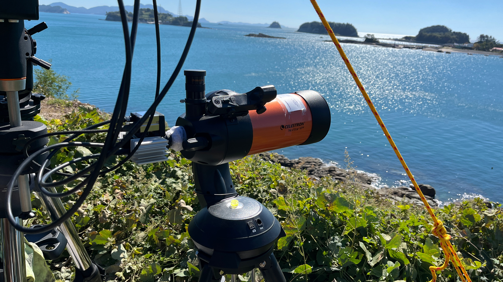
작은 망원경으로는 사전에 계산했던 촬영 범위에 맞춰 누리호 전체를 담았다. 망원경에 카메라를 직접 연결할 때 화면에 들어오는 범위는 초점거리와 센서 크기에 따라 달라진다. 따라서 확대 정도뿐 아니라 기체 전체가 화면에 들어올지도 장비 선택 때부터 생각해야 했다. 앞선 망원경 촬영 조건 검토에서 예상한 시야를 실제 촬영 화면으로 확인하며, 전체 모습을 담는 구성과 세부를 확대하는 구성을 함께 운용했다.
7. 같은 장면을 두 센서로 기록하다
최종 구성에는 두 망원경, 카메라, 노트북과 펑션 제너레이터가 함께 들어갔다. 광학계의 방향과 초점을 맞추고, 카메라 영상과 트리거 연결을 점검한 뒤 발사 장면을 기록했다. 빔스플리터를 이용한 DVS·CIS 촬영에서는 같은 관측 장면의 빛을 두 센서로 나누어 받았다. 광학계, 신호 설정, 데이터 저장까지 준비했던 요소들이 실제 촬영에 함께 쓰였다.
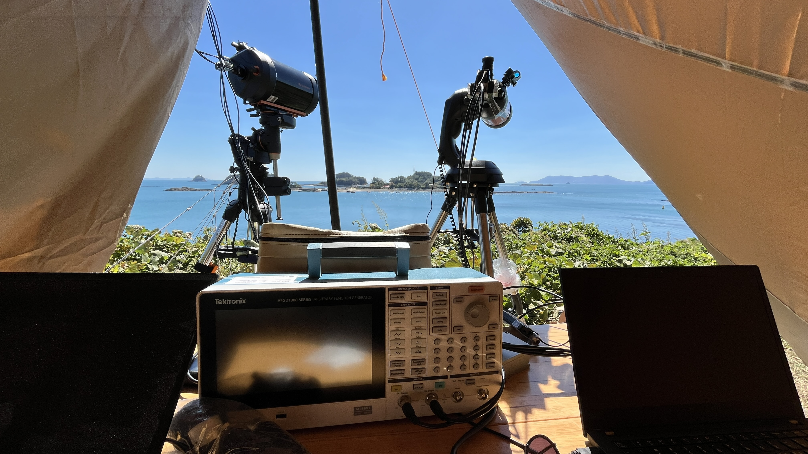
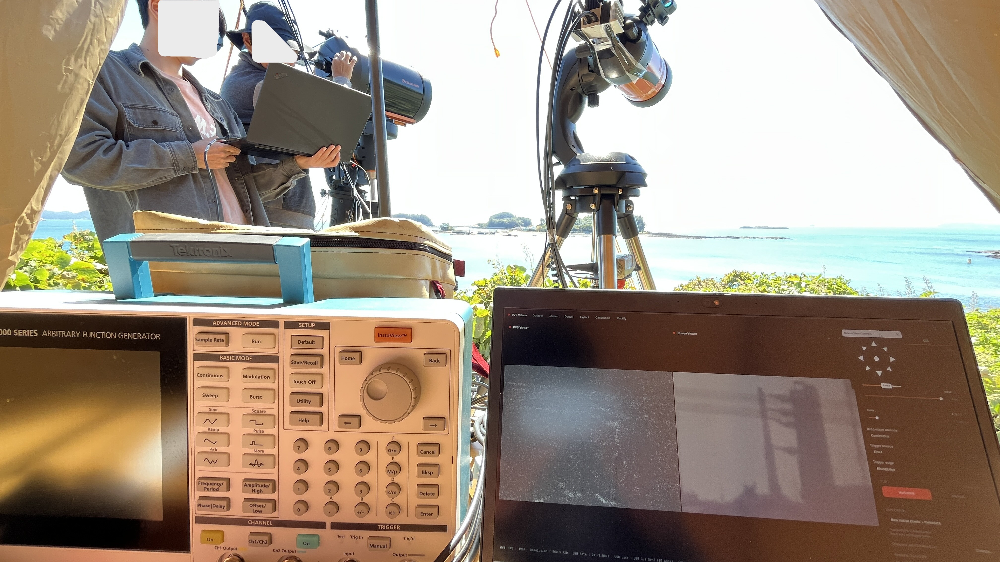
이 구성으로 발사대를 관찰하는 장면과 누리호가 상승하는 장면을 기록했다. 풍경 사진에서는 작은 막대처럼 보이던 누리호가 촬영 영상에서는 기체와 불꽃을 살펴볼 수 있는 크기로 나타났다. 발사대 방향을 찾고 망원경을 설치하며 준비했던 일들이 실제 영상으로 남았다.
두 카메라를 나란히 보니 같은 불꽃이 다르게 보였다. CIS에서는 밝은 화염이 포화되어 하얗게 뭉친 반면, DVS에서는 노즐별로 분출되는 불꽃과 연소 중의 변화가 드러났다. 기체가 올라가는 움직임에 더해 각 노즐의 화염을 구분해 볼 수 있었다는 점이 이번 촬영에서 인상적이었다.
8. 촬영 데이터의 누적 표시와 4K·60 FPS 영상화
촬영 데이터의 후처리와 영상 제작도 직접 맡았다. DVS는 2000 FPS, CIS는 100 FPS로 촬영했다. 빠르게 변하는 이벤트를 누적해 표시하고 CIS 영상과 나란히 배치해, 원본의 세부 표현을 최대한 살린 4K·60 FPS 비교 영상으로 제작했다. 이 후처리와 영상 제작도 모두 직접 진행했다.
| 구분 | 촬영·제작 조건 | 의미 |
|---|---|---|
| DVS 촬영 | 2000 FPS | 이벤트 데이터를 얻을 때 사용한 카메라 조건 |
| CIS 촬영 | 100 FPS | 일반 영상의 촬영 속도 |
| 공개용 영상 | 4K · 60 FPS | 촬영 데이터를 누적 표시·구성한 비교 영상의 출력 조건 |
| 영상 제작 | 직접 처리·제작 | DVS와 CIS 결과를 함께 볼 수 있도록 영상화 |
왼쪽에 DVS, 오른쪽에 CIS를 놓으니 두 카메라의 차이를 한 화면에서 볼 수 있었다. DVS 쪽에서는 움직임과 화염의 변화를 따라가고, CIS 쪽에서는 기체와 주변 배경을 함께 살펴볼 수 있다. 작은 불꽃의 윤곽도 비교할 수 있도록 영상의 해상도를 충분히 확보했다. 글 앞에 올린 상승 영상과 발사대 관찰 영상은 이렇게 정리한 결과다.
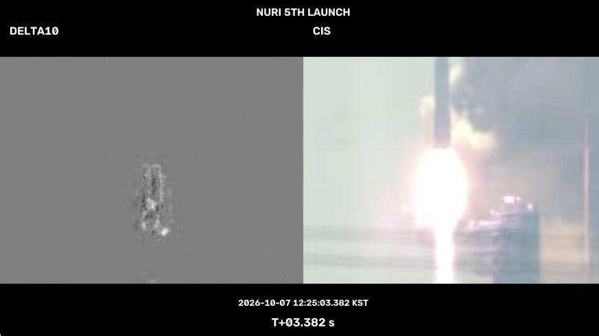
9. 데이터셋 수집에서 배운 점과 다음 촬영 준비
이번 촬영을 통해 데이터셋의 준비 범위가 구체적으로 보였다. 장소와 숙소를 미리 정하고, 현장에서 데모를 진행하고, 문제가 생긴 연결과 설정을 다시 시험했다. 원하는 장면을 얻으려면 광학계의 시야, 신호 입력, 저장 성능, 실제 운용 조건을 모두 맞춰야 했다.
작은 망원경에 누리호 전체가 들어오는 것을 확인하면서 사전 시야 계산이 실제 촬영으로 이어지는 경험을 했다. 외부 트리거 테스트에서는 신호를 만드는 장비와 전달하는 케이블, 신호를 받는 카메라 설정을 함께 이해해야 했다. 대표님, 선임연구원과 장비를 연결하고 결과를 확인하며, 미리 계산하고 준비한 내용도 현장 데모로 검증해야 한다는 점을 배웠다.
저장 프로그램 개선과 망원경 준비, 어댑터 제작을 실제 데이터 수집으로 연결했고, 얻은 데이터를 누적 표시해 다른 사람이 볼 수 있는 영상으로 만드는 과정까지 직접 진행했다. 특히 CIS에서 포화된 불꽃을 DVS에서는 노즐별로 살펴볼 수 있었던 장면은, 이벤트 카메라로 이 발사를 촬영한 의미를 보여 주었다.
이 경험을 바탕으로 팀원으로 참여 중인 이벤트 카메라·LiDAR·RGB 복합 주행 장면 데이터셋 준비도 한 단계 가까워졌다. 다음 촬영에서는 움직이는 장면을 여러 센서로 함께 기록해야 하므로, 장비 설치와 신호 설정, 시간 동기화와 저장 상태를 함께 확인하는 일이 중요하다. 누리호 촬영에서 익힌 사전 준비, 현장 데모, 문제 해결과 데이터 확인 경험을 그 과정에 이어서 활용하려 한다.